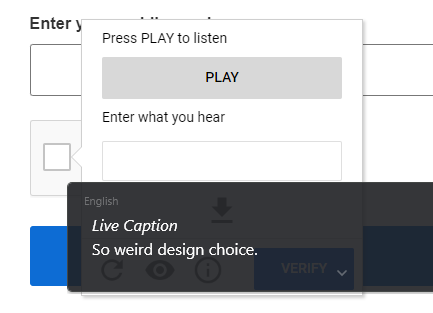
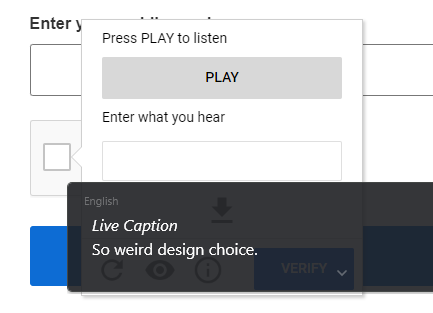
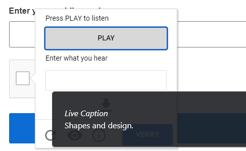
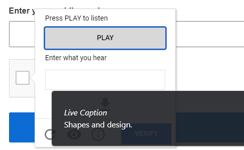
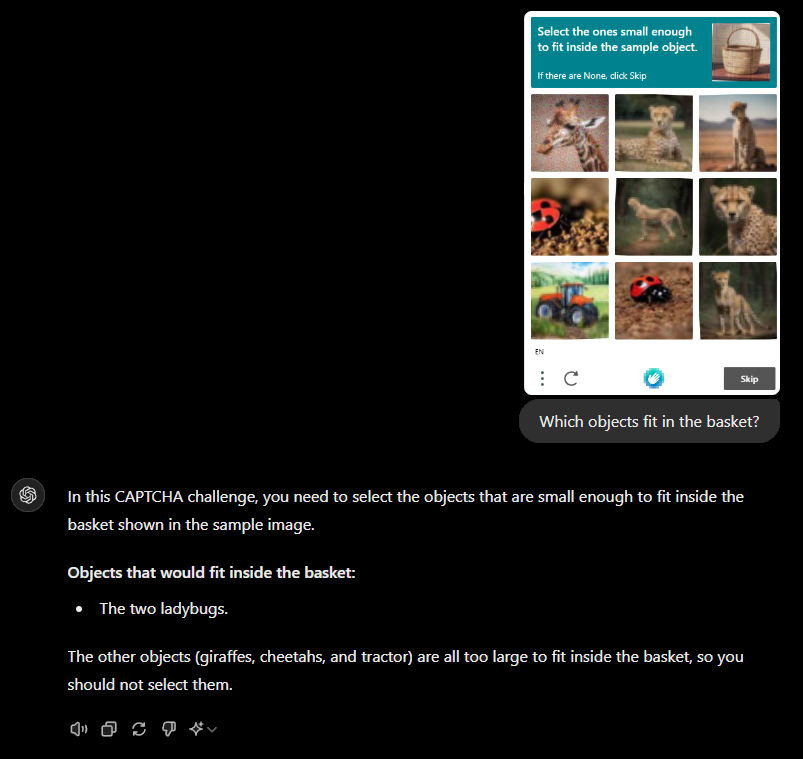
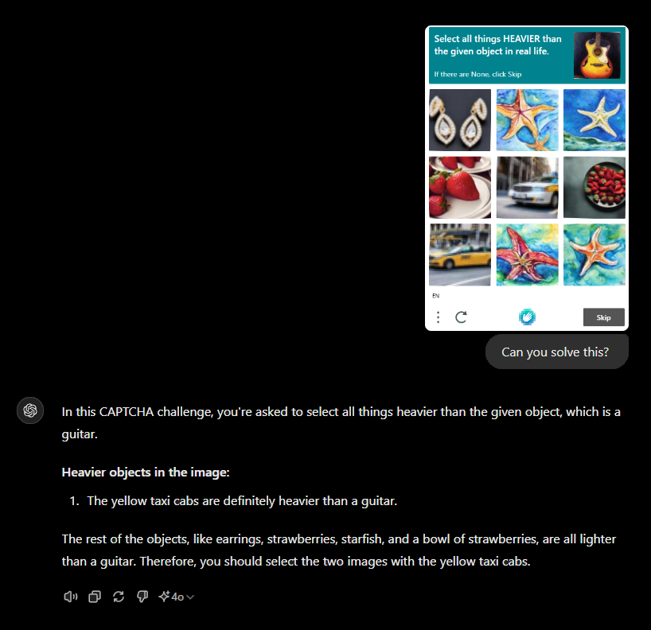
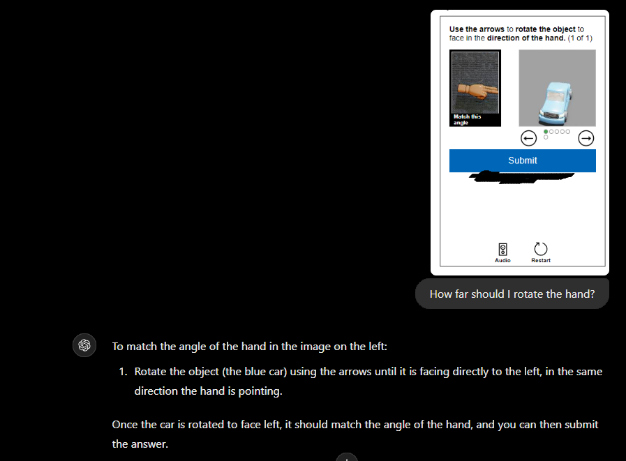

Are captchas still worth it?
DISCLAIMER: I wrote this just for fun and to poke at captchas. I have the brain of a rock, and this is not a news source, so please don't take anything seriously here.
So, what are captchas for? To stop robots, I think. They are designed to prevent automated systems from accessing stuff.
But with the AI boom being bigger than ever, AI can now easily solve captchas (screenshots), puzzles, and those distorted texts.
To start, I tested Chrome's Live Caption onto reCAPTCHA's audio captcha:
 
 

It was correct.
Next, I tested GPT-4o with screenshots of hCaptcha - constantly getting harder to solve:

Finally, I tested Google Gemini:

That was actually a 4, but whatever.
Now, I'm very confident it's not that simple. If you're going to make a AI powered captcha bypasser, at that point, wouldn't it be easier to just solve it yourself?
This tweet by Enderman inspired me to make this. I might come back and write more to this later.